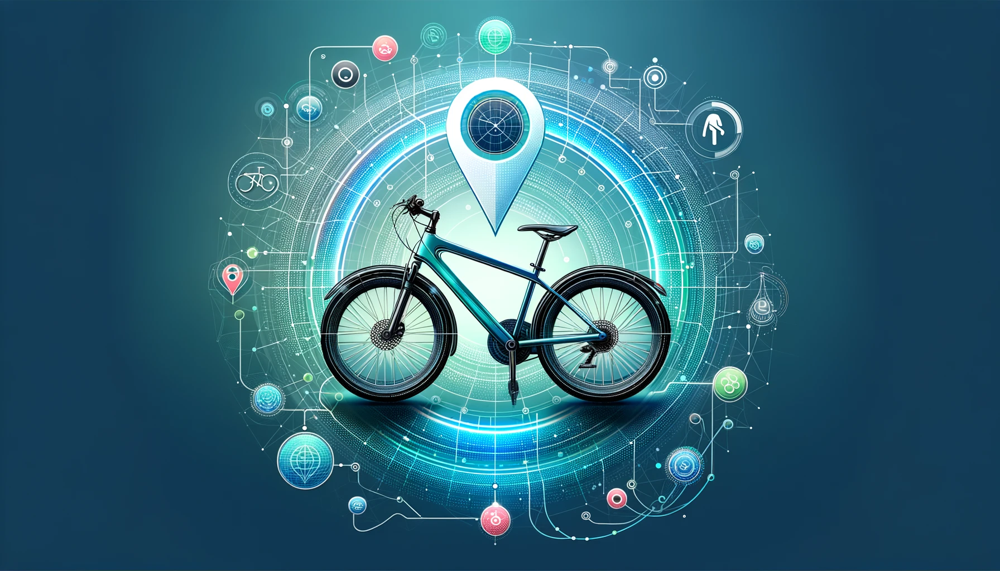

Utilizing a multi-class Convolutional Neural Network alongside binary classifiers, Chess Vision applies deep learning for precise chess piece recognition. The project also explores GANs for generating synthetic chess images, showcasing practical machine learning applications in game digitization.
This project showcases a Cloud Bookshelf Application designed with microservices architecture, employing CRUD operations for seamless book and bookshelf management. It leverages Spring Boot for backend development, with Docker and Kubernetes facilitating cloud deployment.
This project presents a comprehensive analysis and audit of smart contracts, focusing on common vulnerabilities and practical solutions. Using Solidity and Ethereum, it demonstrates the creation and enhancement of a beginner's smart contract, detailing security principles, potential risks, and up-to-date solutions.

This paper investigates the future trajectory of ChatGPT, focusing on its technical evolution, social implications, and potential challenges. It delves into the advancements since GPT-3.5, exploring the journey towards Artificial General Intelligence (AGI) and the broader impact of such technologies.

...